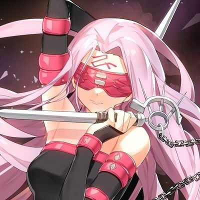
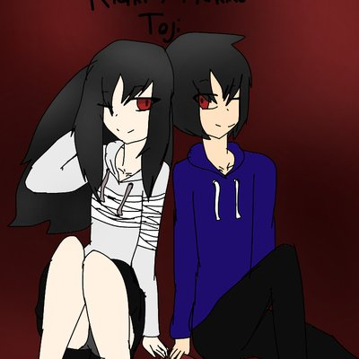

Yveltaly/Jess
Yveltaly (ou Jess pour ceux qui la connaissent) est quelqu'un qui est de façon permanente dans le troll (ça tombe bien moi aussi), la décrire est simple: ne la prenez jamais au sérieux sinon vous finirez aussi triggered que les profs de Sciences Sociales et Economiques quand ça stonks pas. Si vous aimez l'humour absurde et noir faut la follow
